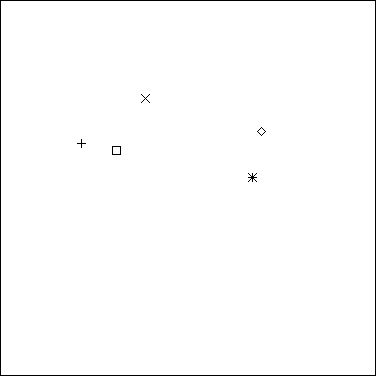
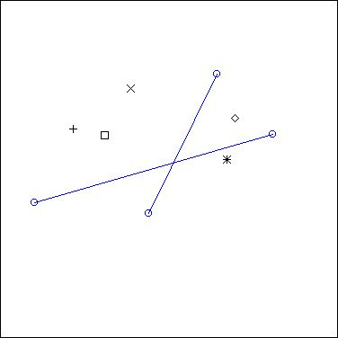
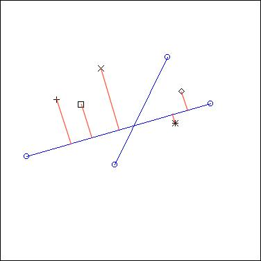
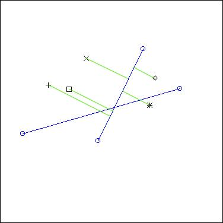
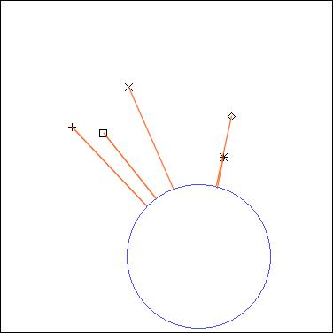
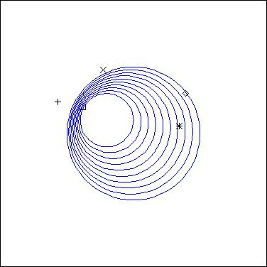
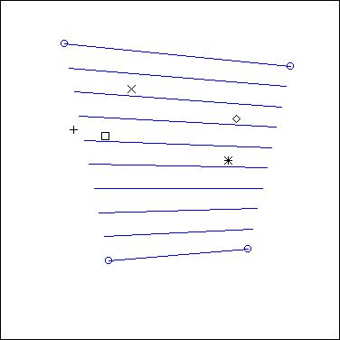
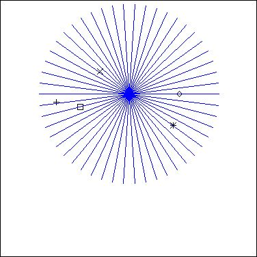
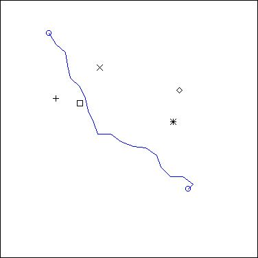
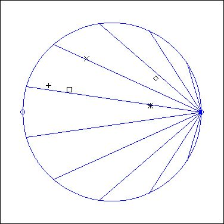

GeoMaestro
Projectors: from events to MIDI phrases
Principles
Fundamental functions: Ecoute() and EcouteC()
The Volume[], Pit[], Pan[] and Dur[] arrays of functions
Reference section: Projectors
1: Principles
Here are five events that could have been generated with the graphic tool (this image was actually taken from a screen snapshot):

To get a musical phrase from these static events, we have to define first when each of them will be played. To do so, we give GeoMaestro a support (segment or circle) to project them onto.
Here are two segments we can use:

Projection on the longest one is the operation represented below by red lines:

... and here is projection on the other one:

As you can see, projection means actually orthogonal projection (that is: a right angle is used to get the projecting line from the segment to the event)
Now, this operation only gives the order and the respective time values of the notes in the eventual phrase (once we have chosen whether the segment is going to be read from right to left or from left to right) . There is much more to define: durations of notes, pitchs, panning, velocities. The event's nodur ("nodur" stands for "note and duration", but it can actually be any KeyKit phrase) contains such information, but it's only here to be changed (or not) !
So these values are not automatically calculated, since GeoMaestro is intended to let the composer free to compose. Instead, we will define special functions which take as parameters the distance and side from the event to the segment, and of course the event nodur (note value) to calculate the different note attributes. Some of theses functions are already here, ready to use, but you are free and welcome to write your own.
Before we go on and see that in details, here are three other examples when a circle is used for projection:



... it's pretty much the same principle as with the segment projection, apart from the fact that you need to define one more thing here: the starting point of the rendered phrase.
So you can see that this simple set of five events can very easily be "listened to" in a large variety of ways.
2: Fundamental functions: Ecoute() and EcouteC()
"ecoute" is French for "listen to"
The Ecoute() and EcouteC() functions are the implementations of the principle we just saw before. Their syntax can be very simple:
L = Ecoute(A, B)
... is expecting that A and B are points (like ["x"= 1, "y"= 2] ). Projection is done onto the segment AB, with A as the starting point. Ecoute() returns a ligne L ("ligne" is French for "line", I'll keep it in French here to remind you that it is a specific data structure). The rendered phrase is stored in L["ph"]
For a projection on a circle, here's the basic syntax:
L = EcouteC(C, A, n)
... were C is a circle (like ["c"= ["x"= 0, "y"= 0], "r"= 1] ), A is a point and n is an integer.
A is used to define the starting point for rendering (we draw the line defined by the center of the circle to A, and start rendering at the point were it cuts the circle).
n is the number of round we do. Usually it's 1 (since in most cases you can simply repeat the rendered phrase if you want more of it; this is not true for events with scripts, though), but it is also used to define the sense of rotation: -1 go one way round, and +1 the other way round.
You may wonder how the duration of the phrase is calculated. Good question !
By default, it is the length of the support multiplied by the global variable CPCM. CPCM stands for "Clicks per CentiMeter", but it actually means "Clicks per GeoMaestro Unit". If you have a look at the initialisations.k file, you'll see:
CPCM = seconds(1)
which means that, by default, one unit of length is corresponding to one second. You can change that.
Now you may want to set the length of the phrase rendered by Ecoute() or EcouteC(). To do so, you need to give it one more argument:
Ecoute(A, B, duration) or EcouteC(C, A, n, duration)
Here duration is an integer, with a very specifix use. Let's say that the support's length is length, and the duration of the rendered phrase is phdur:
if duration is 0, we stick to the default:
phdur = CPCM*length
if duration < 0, we are in relative mode:
phdur = |duration|*CPCM*length
if duration > 0, we are in absolute mode:
phdur = duration
Remember that the duration unit if the Click. To know how many Clicks you have in a second, type " print seconds(1) " in the console (See KeyKit help files). So in absolute mode, duration is a number of Clicks and it will be the length of the phrase, independently of the length of the support. You'll see the interest of this mode when we look at the CercleRythm() projector.
Note that duration = 0 and duration = -1 give the same results: the default relative mode.
duration = 2 makes the "tempo" get divided by 2, while duration = 0.5 makes it double.
Finally, there are two more optionnal argument: the starting time t0 of the phrase (by default it's 0), and the region of the event scene we're listening to (by default, it's Tout, that is: everything). So the complete syntax with all possible parameters is:
Ecoute(A, B, duration, t0, region)
and
EcouteC(C, A, n, duration, t0, region)
If you don't know what a region is, go and read the data structures documentation
3: The Volume[], Pit[], Pan[] and Dur[] arrays of functions
Now we will have a look at what's happening inside the Ecoute() and EcouteC() functions.
To decide how events are going to become notes when projected on a support, specific functions are used for each note attribute. They are contained in arrays because they are also specific to channels.
The function arrays are defined and initialized in the initialisations.k file. This is where you can set their default values.
The functions themselves have their code written in the lib_dist.k file, and that's were you can had your home-made ones, in such a way that they will be smoothly integrated to the GUI tool (see advanced features for more).
So here's the idea: each projected event is associated with a distance (to the support) and a side (it comes from left or right). Each events also contains a nodur, that is a note or a phrase. So these three elements are the arguments we will use. A fourth argument is the channel number, which can be useful in many ways (for example to use channel-specific parameters)
Let's see that with an example:
suppose we have
Volume[5] = "Vexp1"
Pit[5] = "NoChanges"
Dur[5]= "NoChanges"
Pan[5]= "BasicPan"
... this will completely define how is treated an event belonging to channel 5. The string values are the names of the used functions (we use KeyKit's efunction() to convert string to function)
Let's say the event's nodur is ph, its distance to the support is d, and its side is s (s is -1 for left or +1for right)
The corresponding note N on the rendered phrase will be initially set to ph (so it's identical to the event nodur), then have its attributes modified this way:
N.pitch += NoChanges(ph, s, d, ch)
N.dur += NoChanges(ph, s, d, ch)
N.vol += Vexp1(ph, s, d, ch)
Also, a pan message will be send for channel 5, setting the pan to BasicPan(ph, s, d, ch)
What does that mean ? We have to look at the codes for these functions, in file lid_dist.k. Their names may be a bit weird, especially because they're an horrible mixure of Strange French and Broken English. But don't forget you're supposed to write your own functions ! The ones I provided here are very basic.
So in lid_dist.k we see:
function Vexp1(ph, s, d) { return (ph.vol*(exp(-d)-1)) }
function NoChanges() { return (0) }
function BasicPan(ph,s, d) {return (64 + s*integer(Minimum(PAN_FDIST*d,63))) }
... so we see that NoChanges() is judiciously named, since it has no effect ! In this example, both duration and pitch are the same for the event nodur as for the corresponding note.
The volume is affected, though: you can see that an event very close to the support keeps its initial volume, while it gets down very fast if the distance increase. (Note that there is a global variable SILENCE set in initialisations.k that defines the volume threshold for keeping the note. By default it is set to 10, which means that an event whose projected note has a volume less than 10 will be considered as silent and ignored).
The pan value is calculated so that a left-hand event will sound at the left hear, while a right-hand event will sound at the right. Also, precise pan depends on the distance so that close events are in the middle of the pan area. The function use a global variable PAN_FDIST as a factor to the distance. As for any global variable parameter related to distortion functions, you can set this value in the InitParameters() function in the lib_dist.k file.
So the overall effect of these example settings is that you hear events as if you were walking along the support: you hear them at the right or at the left, depending on where they are; and the closest the loudest. The speed of your "walk" would be set with the duration argument in the Ecoute() or EcouteC() function.
This was only a very basic example... you can easily create huge distortions and define very weird ways of "walking" through an event scene by defining your own functions and mixing their effects.
4: The projectors (or projection functions). Reference
Well, the basics have been documented, we can now relax and enjoy a little visit of the different functions provided so far by GeoMaestro to articulate the fundamental Ecoute() and EcouteC().
I will call these projectors. They are simply little algorithms playing with Ecoute() and EcouteC(). They do not calculate any projection by themselves. They are also very easy to write and to understand, so you can look at their codes (in file projection.k) and get insights there for creating your own projectors.
We will again take our five events as an example scene to describe the following projectors:
Spiro, Onde, Echelle, Helice, Brown, AversB, Vague, CercleRythm
I'll describe the specific arguments for each of them. Note that the "... " will stand for the three optionnal arguments of Ecoute() and EcouteC(), that is: duration, starting time t0 and region.
For all projectors here, when there are multiple calls to Ecoute() or EcouteC(), the rendered phrases are added (using the + operator for phrases, not the | one )
About duration: the duration argument is transmitted to each internal call to the Ecoute functions, so if for example you ask for an Helice with ten segments, the total duration will be ten times the duration of one segment. For other projectors, where the intermediary segments/circles are not necessarily of same length, it will depend on whether you use absolute or relative mode. And it's again something completely different with CercleRythm()...
If what I just said is not really clear, read the projectors desciptions first and come back. It should sound simpler !
Spiro
L = Spiro(C, radius, s, theta0, dtheta, nC, D, ...)

EcouteC() is called for nC circles of radius radius whose centers belong to a centers circle C. The first centers is at angle theta0, the angle between two consecutive centers being dtheta. D is the starting point for EcouteC(). s is the sense of rotation.
s, nC: integers
radius, dtheta, theta0: floats
C: circle
D: point
Note: angle values range from 0 to 2*Pi
L["inter"] contains the fields "c" and "r" for each circle
Onde
L = Onde(C1, C2, nC, s, D, ...)

EcouteC() is called for nC circles evenly distibuted from C1 to C2. s is the sense of rotation, D the starting point.
C1, C2: circles
nC, s: integers
D: point
L["inter"] contains the fields "c" and "r" for each circle
Echelle
L = Echelle(A1, A2, B1, B2, nS, ...)

Ecoute() is called for nS segments evenly distributed from (A1 to B1) to (A2 to B2).
A1, A2, B1, B2: points
nS: integer
L["inter"] contains the fields "A" and "B" for each segment
Helice
L = Helice(A, radius, theta0, dtheta, s, ...)

Ecoute() is called on segments turning around their middle point A. Segments length is 2*radius and the angle between two consecutive segments in dtheta. The fist segment is at angle theta0. s is the sens of rotation.
A: point
radius, theta, theta0: floats
s: integer
L["inter"] contains the fields "A" and "B" for each segment
Brown
L = Brown(A, B, amplitude, lasting, {region,} ...)

Ecoute() is called for as many segments as is necessary to obtain a rendered phrase of duration lasting. The first segment is (A to B), then A and B are randomly moved by a distance amplitude, so that we get the next segment, and the process is repeated for each new segment.
The motion of the points can be restricted to a geometrical region (optionnal argument. Note: if you need to give this argument only because you need to access the next optionnal ones, use the value Tout which is [0=0], the region covering everything. See data structures for the format of regions.)
A, B: points
amplitude: float
lasting: integer
region: region
L["inter"] contains the fields "A" and "B" for each segment
AversB
L = AversB(A, B, length, theta, ...)

Ecoute() is called on segments whose length is length. We start from point A, ang go toward B. At each step, the direction taken is randomly choosen around the right direction, within a range of theta (the image above has been calculted with theta = 0.5*Pi)
A, B: points
length, theta: integer
L["inter"] contains the fields "A" and "B" for each segment
Vague
L = Vague(P1, P2, length, theta, ...)

Vague() is a kind of mixure of Echelle() and AversB().
AversB() is called for points in P1 to points in P2.
P1, P2: piste
length, theta: integer
L["inter"] contains the fields "inter" for each call to AversB()
CercleRythm
L = CercleRythm(A, B, nS, ...)

This projector is a very specific one, intended to generate interesting rythms. It is also the only one here that use the absolute mode for the duration parameter in Ecoute()
Ecoute() is called on a set of nS segments all starting at point A (at the right on the image). The duration parameter is set according to the length of the segment (A to B). Segments are calculated so that A and B are always the first and last points that are projected onto them. Geometrically, it means that, since they all start at A, their other extremity is on the circle of diameter AB. The projector evenly distribute them on that circle
The way we handle duration here implies that all events on the segment (A to B) will be rendered with the same time pattern for every segment. So if there are only events on that diameter segment, the result would be the same as repeating nS times Ecoute() on (A to B), apart from distortion effects coming from the distance/side changes. This gives a constant rythmic basis. Others events elsewhere in the scene may sound at very different times (or not sound at all !).
A,B: points
nS: integer
L["inter"] contains the fields "A" and "B" for each segment
-- Back --